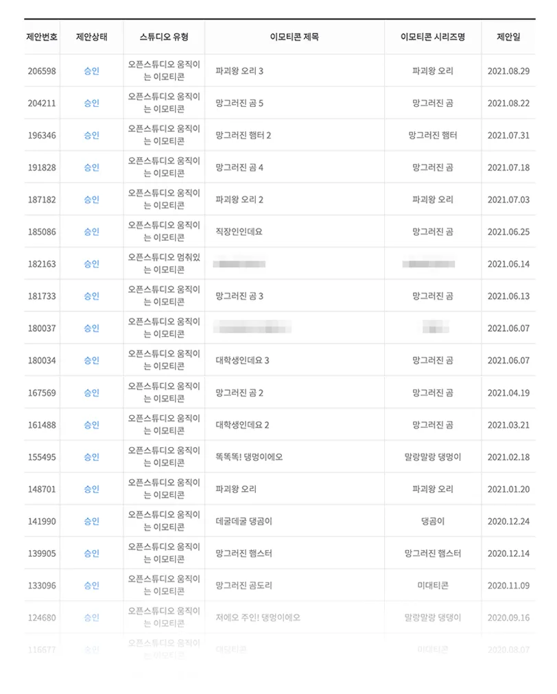

클래스 소개
2024년에도 망그러진 곰의 인기는 계속 됩니다 🔥끝없는 팝업 스토어 & 콜라보 'MZ세대 취향저격'
안녕하세요, 이모티콘 작가 유랑입니다. 저는 <망그러진 곰>, <대학생인데요>, <파괴왕 오리> 등 다양한 카카오 이모티콘을 출시하고, 이렇게 탄생한 이모티콘 캐릭터들로 재미있는 만화와 애니메이션들을 그리고 있어요. 이번 클래스에서는 저만의 이모티콘 제작 노하우와 꿀팁을 통해 여러분에게 좀 더 쉽고 빠른 이모티콘 성공의 길을 안내해드릴게요!
"만년 50위권 작가가 1위를 할 수 있었던 결정적인 이유"
- ★ 이모티콘 인기 순위 1위를 차지하고, 카카오 인기 ip가 되기까지 정확히 4년이 걸렸어요!
- ★ 그전까지는 수많은 실패와 시행착오를 겪었죠. 성공과 실패 모두 겪었기 때문에 더 자신 있게 여러분들에게 알려드릴 수 있어요.
“이렇게 하면 안 되고, 이렇게 하면 된다!”
강의 내용
“아무리 제안해도 미승인만 받아요 ..ㅠㅠ”
“이모티콘은 출시했는데 순위가 너무 낮아요!”
미승인 때문에 괴로우신 분들부터, 좋은 성적이 나오지 않아 고민이신 분들까지!
밑바닥에서부터 차곡차곡 경험을 쌓으며 올라온 저만의 인기 이모티콘 만드는 노하우를 빠짐없이 알려드릴게요.
그림을 잘 그리지 못해도, 아이디어가 떠오르지 않아도 괜찮아요.
- 이모티콘에 대한 열정만 있다면 누구든 가능해요!
- 날 것의 아이디어와 캐릭터를 다듬어 보석으로 가공하는 법을 알려드릴게요. 여러분도 충분히 매력 넘치는 이모티콘을 만들 수 있어요.
- 오직 클래스 수강생들에게만! 작가의 승인받는 유용한 <포즈 가이드>, <턴 어라운드 가이드>, <캐릭터 가이드>를 제공합니다. 가이드를 이용해 우리 함께 쉽고 간단하게 재밌는 이모티콘 만들어봐요.

4년간 총 승인 개수 31건!
아무리 내 마음에 드는 캐릭터라도 승인을 받지 못한다면 빛을 볼 수 없어요. 4년간 총 승인 31건을 받은 검증된 실력으로 여러분에게 저의 승인 비법을 전부 알려드릴게요!
- 뻔한 거 말고, 매력적인 아이디어 찾는 법!
- 자연스러운 고퀄리티 모션 그리는 법 (+유랑 작가의 모션 가이드 파일 제공)
- 만든 이모티콘으로 재미있는 SNS 영상툰까지!
와! 유랑 님 덕분에 움직이는 그림도 만들어보고 너무 신나요!! 감사합니다!!!
브러시 굵기 차이나 색 잘못 칠해진 것이 눈에 들어오지만 그래도 너무 재밌었어요! 감사합니다 유랑님!!
피드백을 받고 그리니까 더 귀여워진 것 같아요 !
11초짜리 영상에 이렇게 많은 시간&노력이 들 줄이야ㅠㅠ... 중간중간 레이어 작업 실수해서 다시 그리고 하다보니 3시간 넘게 걸렸어요@_@ 영상은 처음 만들어본거라 버벅거리고 어려웠지만 넘넘 재밌었어요!!!!! 이번 강의 통해 여러가지 많이 배운 것 같습니당.. 진짜 뿌듯ㅠㅠ 어영부영 완강해가는데 다시 처음부터 듣고 제대로 그려보려구요! 유랑님 넘넘 감사합니다!!!
저번강의 인사하는 동작보단 조금 어려웠지만 재밌어요🥺제 캐릭터가 움직이는게 너무 신기해요!!